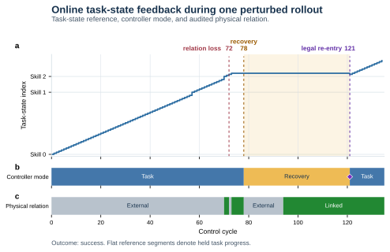
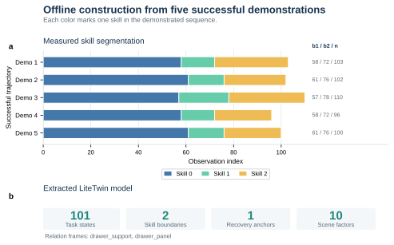

Motion policy
Loading…Open MP4
RLBench
LiteTwin tracks the relation between the gripper and the object. When contact breaks, it helps the motion policy recover and continue the task.
Paired rollouts
Same scene, seed and disturbance. Choose a recording to see how the two runs diverge.
Controller trace

Five demonstrations have different lengths but share three ordered skills. Aligning the skill boundaries yields 59, 15 and 27 states, giving the controller 101 task states to track.
Model construction code ↗
Explore the recordings locally, build a task model or reproduce the Open Drawer rollout.
Requires Git and Python 3.
Open http://localhost:8000 to browse all 13 paired recordings.
Gallery files ↗git clone https://github.com/Yukun-Zheng/LiteTwin.git
cd LiteTwin
python3 -m http.server 8000 --directory docsRequires Git and Conda. The bundled five trajectories and motion checkpoint run on CPU. Start from a fresh checkout.
Inspect outputs/offline/model_summary.json for the fitted model with 101 states across three skills. Rebuilding replaces the earlier demo outputs.
Model and input guide ↗git clone https://github.com/Yukun-Zheng/LiteTwin.git
cd LiteTwin
conda env create -f demo/environment-policy.yml
conda activate litetwin-policy
python -m pip install -e ./code
export LITETWIN_POLICY_PYTHON="$(python -c 'import sys; print(sys.executable)')"
bash demo/run_offline.shBuild the model first, then complete the x86-64 Linux setup. Run from the repository root in the configured shell.
Inspect outputs/online/ for the episode outcome, MP4 and cycle-by-cycle trace.
Linux simulator setup ↗bash demo/run_online.sh open_drawerRLBench
Browse 13 paired recordings across 12 tasks. Filter by the disturbance each policy faced.
No matching recordings.